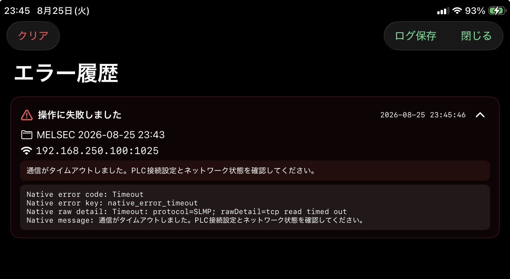

Error History
エラー履歴
アプリで発生した通信やファイル操作などのエラーを確認します。

画面概要
開き方
右上メニューから エラー履歴 を開きます。
履歴の見方
タイトル、発生時刻、プロジェクト名、接続先、詳細を表示します。行を展開すると診断情報を確認できます。
ログ保存
履歴がある場合は ログ保存 から CSV ファイルとして保存できます。
クリア
クリア を選び、確認画面で実行すると保存済みのエラー履歴を削除します。
ログ保存
エラー履歴は error-history-YYYYMMDD-HHMMSS.csv というファイル名で書き出します。
アプリ情報
AppPlatform、AppVersion、BuildNumber、OSVersion、NativeCoreVersion を出力します。発生情報
Timestamp、TimestampEpochMs、Project、Endpoint を出力します。内容
Title、Detail、Diagnostics を出力します。